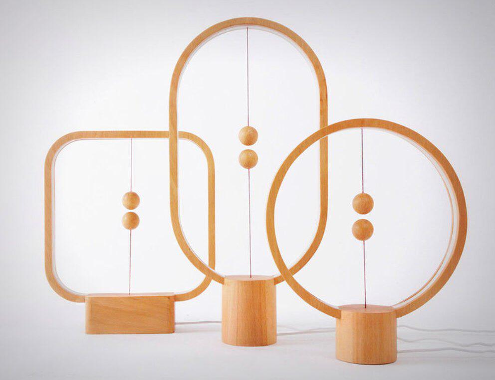
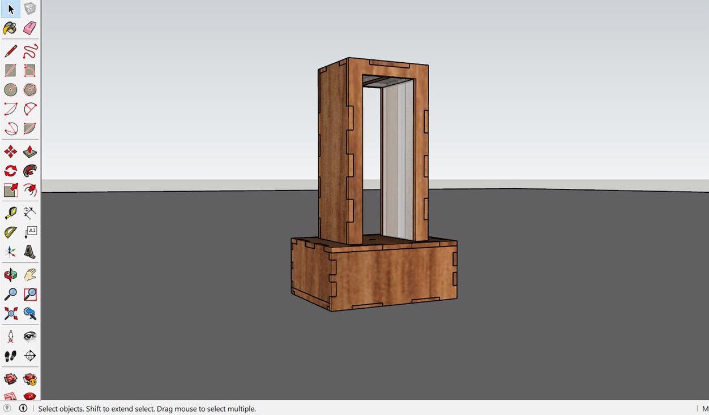
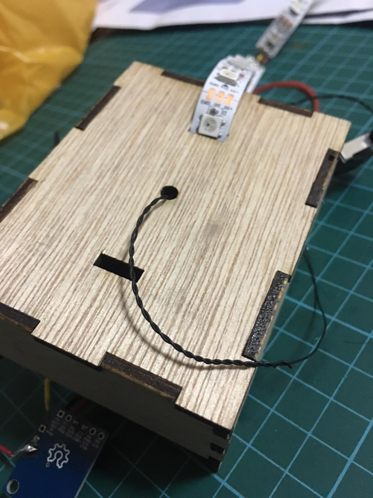
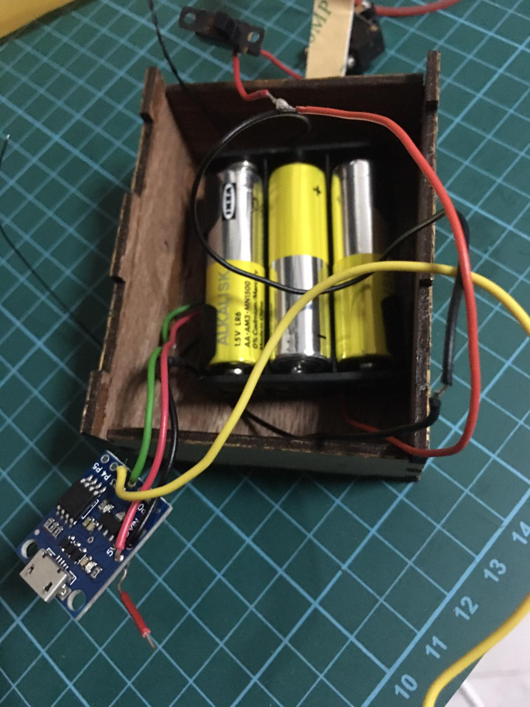
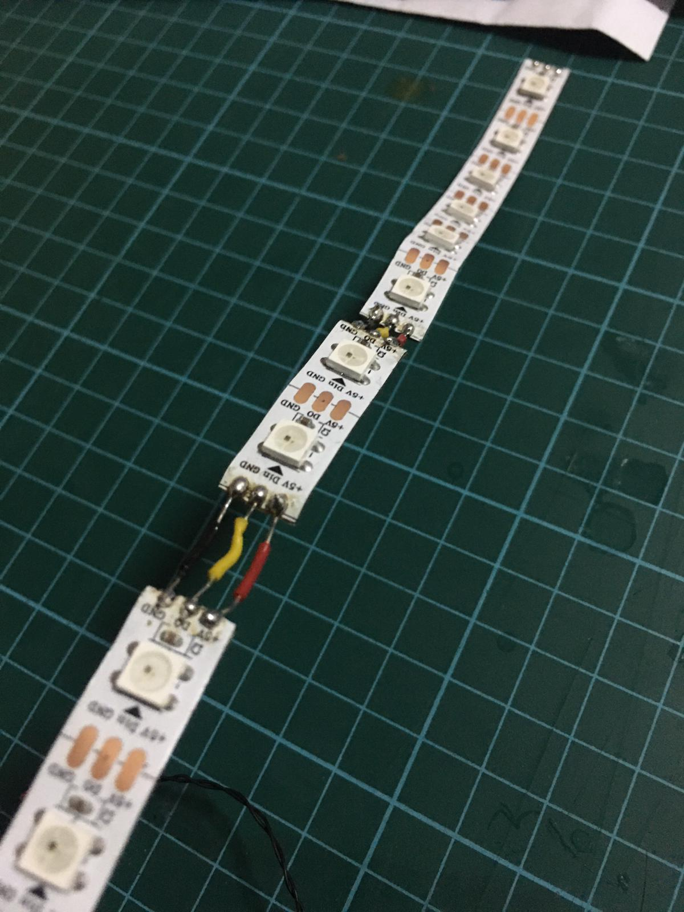

Magnetic lamp
Team members: Irfan,Terry,Hafiza,Linzhao
Applying what we learn throughout the enire elective course, we were to design something that has got to do with 3d printing, laser cutting and arduino. We then got our inspiration by a magnetic lamp we found on the internet.

The lamp will light up when the two magnets in the center hit. All to be lazer cut and the base inside supporting the battery to be 3d printed.
We actually did the base and the top portion on sketch up and then flatten it down on autocad to be in 2D to then be laser cut.


Putting it all together,we then came up with a product that looks like this on sketchup.

Here are some of the process photos of this product.

Base made to hide all wirings, switches and battery with a 3d printed piece inside.



With the top portion also laser cut, led strips will run across.
